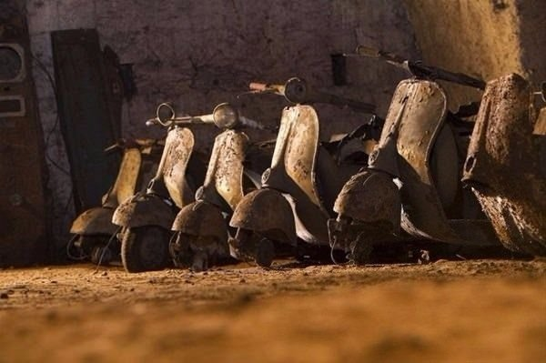

Yolda yürürken bulduğu taşın dışını soyan adam gördüğü manzara karşısında şaşkına döndü.

Sıradan bir taş gibi görünüyor ama içini açınca bakın ne çıktı.
Taşın üst katmanı soyulunca içinden zümrüt taşı çıktı.
İşte o ilginç görüntü...
Jeologların Napoli, Monte di Dio'da yaptığı incelemeler sırasında yer altında birbirine bağlı tarihi geçiş yolları, tüneller, mağaralar bulundu.
Ancak asıl ilginç olan bu keşif değildi, tamamen başka bir şeydi.
Herkesi şaşırtan olay bu tünellerde bulunan artık antika diyebileceğimiz otomobiller, savaş sırasında kaybolmuş parçalanmış Aurelio Padovani'nin yaptığı faşist döneme ait anıtlar, motosikletler olmasıydı.
Yapılan keşif tam olarak Piazza del Plebiscito'nun 150 metre altındaydı.
Buraya Galleria Borbonica adı verildi. 1853'te yapıldığı anlaşılan çok katlı Bourbon Tünel Ağı 1022 metre karelik bir alanı kapsıyor. Tünelin inşasını II. Ferdinand yaptırmıştı.
Daha İtalya'da henüz birliğin sağlanmadığı, devrim rüzgarlarının estiği günlerde askerlerin ve atların askeri birliklerinden Kraliyet Sarayı'na gizlice gitmesini sağlamak için yapıldığı anlaşılan tüneller gizli bir tarihi de saklıyor.
Tüneller ayrıca sarayın su ihtiyacını karşılayan sarnıçlara da sahip. II. Dünya Savaşı tüneli bir kez daha gündeme getirdi.
Ayrıca evsizler de bir dönem burada barınıyor, sevgililer burada buluşuyordu. 1950'ye kadar öyle ya da böyle kullanılan Galleria Borbonica 1950'lerde terkedildi ve unutuldu.
Uzun süre kullanılmayan bu tüneller şehrin küçük olması nedeniyle 1970'lerde otopark gibi kullanıldı. Hatta kaçak otomobillerin saklandığı yer olarak da biliniyor.
2005'te tesadüfen yeniden keşfedildikten sonra 2010'da ziyarete açılan tünellerin kaderi 2 yıl sonra değişti.

2012 yılında Tononi Persico adlı 90 yaşında bir adam Napoli'li jeolog Gianluca Minin'e II. Dünya Savaşı sırasında saklandıkları bu tünellerden bahsedince Galleria Borbonica'yı turistik olarak değerlendirmek için çalışmalara başlandı.
Yaşlı adamın hatırladığı bilgilerle tünelin çok daha geniş olduğu ve Piazza del Plebiscito ile Serra di Cassano Sarayı'nın arasındaki bölgede olduğu tespit edildi.
3 yıllık bir çalışma sonucunda Aralık 2015'te Galleria Borbonica müze olarak ziyaret edilebilir bir hale getirildi.